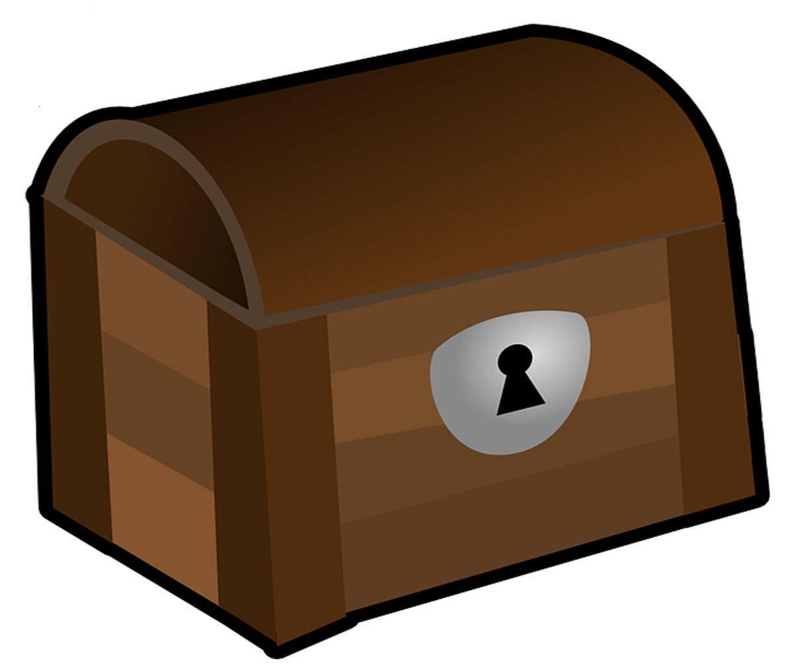

Lesson 67a
Compound Words

ufliteracy.org


Lesson 67a
Compound Words


See UFLI Foundations lesson plan Step 1 for phonemic awareness activity.


See UFLI Foundations lesson plan Step 2 for student phoneme responses.


-ed
g
c
a
i
o
e
u
nk
ng
wh
ph
ch
th
sh
ck
s


See UFLI Foundations lesson plan Step 3 for auditory drill activity.

No slides needed for auditory drill.


See UFLI Foundations lesson plan Step 4 for blending drill word chain and grid.
Visit ufliteracy.org to access the Blending Board app.


See UFLI Foundations lesson plan Step 5 for recommended teacher language and activities to introduce the new concept.
Syllable
A word or part of a word with one vowel sound.
Closed Syllable
V

C


Closed Syllable
V
C
sun
sun
set
Compound Word
step
dad
Compound Word

Handwriting paper for letter formation practice. Use as needed.
See UFLI Foundations manual for more information about letter formation.

hot
dog
hand
stand

itself
cannot
uphill
backpack
bulldog
suntan
sandpit
sometimes
something

See UFLI Foundations lesson plan Step 5 for words to spell.
Handwriting paper to model spelling.

See UFLI Foundations lesson plan Step 5 for words to spell.
Handwriting paper for guided spelling practice.


Insert brief reinforcement activity and/or transition to next part of reading block.

Lesson 67a
Compound Words

New Concept Review

See UFLI Foundations lesson plan Step 5 for recommended teacher language and activities to review the new concept.
Syllable
A word or part of a word with one vowel sound.
Closed Syllable
V
C
Closed Syllable
V
C
sun
sun
set
Compound Word
step
dad
Compound Word
sometimes
himself
backpack
stepmum


See UFLI Foundations lesson plan Step 6 for word work activity.
Visit ufliteracy.org to access the Word Work Mat apps.
step
mum
pin
ball
kick
off
pick
up
ant
hill
egg
shell
kin
ship
hand
bag
drum
stick
bull
frog


See UFLI Foundations lesson plan Step 7 for irregular word activities.
The white rectangle under each word may be used in editing mode. Cover the heart and square icons then reveal them one at a time during instruction.

See UFLI Foundations manual for more information about reviewing irregular words.

many
Lessons 64-73
A represents either the /ĕ/ sound or the /ĭ/ sound, depending on dialect.
Y /ē/ has not been introduced yet.
The white rectangle under the word may be used in editing mode. Cover the heart and square icons then reveal them one at a time during instruction.
any
Lessons 64-73
A represents either the /ĕ/ sound or the /ĭ/ sound, depending on dialect.
Y /ē/ has not been introduced yet.
The white rectangle under the word may be used in editing mode. Cover the heart and square icons then reveal them one at a time during instruction.
been
Lesson 65+
EE represents the /ĕ/ sound or the /ĭ/ sound, depending on dialect.
In some dialects, the EE in been is pronounced /ē/. In this case, been would be temporarily irregular until lesson 85 when EE /ē/ is introduced.
The white rectangle under the word may be used in editing mode. Cover the heart and square icons then reveal them one at a time during instruction.
into
Lesson 65+
O represents the /ū/ sound.
The white rectangle under the word may be used in editing mode. Cover the heart and square icons then reveal them one at a time during instruction.
friend
Lesson 66+
IE represents the /ĕ/ or /ĭ/ sound, depending on dialect.
The white rectangle under the word may be used in editing mode. Cover the heart and square icons then reveal them one at a time during instruction.
Handwriting paper for irregular word spelling practice. Use as needed.
See UFLI Foundations manual for more information about reviewing irregular words.
Teach
The orange star indicates these are new irregular words that need to be introduced.
See UFLI Foundations manual for more information about teaching irregular words.
because
Lesson 67a+
AU represents the /ŭ/ sound.
In some dialects, AU represents the /or/ sound. In this case, the AU in because would be temporarily irregular until lesson 93 when AU /or/ is introduced.
The final E is silent but does not follow the long vowel VCe pattern.
The white rectangle under the word may be used in editing mode. Cover the heart and square icons then reveal them one at a time during instruction.

Handwriting paper for irregular word spelling practice. Use as needed.
See UFLI Foundations manual for more information about teaching irregular words.


See UFLI Foundations lesson plan Step 8 for connected text activities.
He went on a long hike by himself.
My friend likes softball and kickball.
Pete got something from the sandpit.
See UFLI Foundations lesson plan Step 8 for sentences to write.

The UFLI Foundations decodable text is provided here. See UFLI Foundations decodable text guide for additional text options.
Mo and the Sandpit
Mo was at home with his nan. Mo sat in his sandpit while Nan swept the tiles. When Nan had swept the tiles
she yelled to Mo, “Time to get in the tub!”
Mo did not want to scrub in the tub. He still wanted to sit in his sandpit. “Mo, you must get in the tub because you are full of sand,” said Nan. “OK, fine,” said Mo. He picked up his stuff from the sandpit and got in the tub.
Mo had a good scrub so he pulled up the plug. He sat with Nan. “Can I tell you something, Nan? The scrub
was not so bad. It got rid of all the sand just like you said.” Nan gave Mo a big hug and a kiss.

Insert brief reinforcement activity and/or transition to next part of reading block.